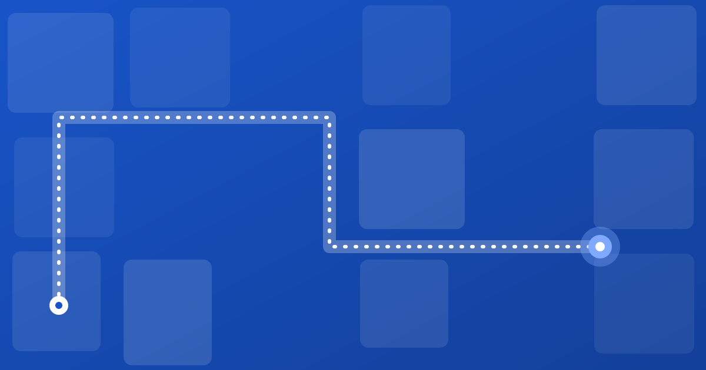

What getting lost actually costs your venue
A simple way to estimate the cost of visitors asking for directions, with a calculator you can fill in using your own numbers.

Nobody budgets for “being asked where the lift is”. It hits hospitals, malls and campuses alike. But those moments add up, and a small amount of arithmetic can make the cost visible.
The simple formula
Staff time lost = visitors per day × share who ask × minutes per answer × days. Multiply by an hourly staff cost to get rupees.
That covers only the direct cost. There are quieter ones too:
- Late arrivals. A patient who finds the right room ten minutes late can disrupt a whole clinic schedule.
- Missed purchases. A shopper who cannot find a store may simply leave.
- Frustration. It shows up in reviews, not in spreadsheets.
Try it with your numbers
Illustrative defaults, not published statistics. Replace them with your own.
What it adds up to, venue by venue
These are the four worked examples from our short video. Each one multiplies a visitor count by a share who get lost and a rupee value per person. The numbers are our assumptions, chosen to be plausible, not measured industry statistics. Change any input and the answer changes with it.
| Venue | Assumptions | Working | Estimated loss |
|---|---|---|---|
| Hospital | 1,000 visitors a day, 2% miss their appointment, ₹500 per consult | 1,000 × 2% × ₹500 = ₹10,000 a day | ≈ ₹36.5 lakh a year |
| Exhibition | 5,000 visitors a day for 3 days, 10% never find their booth, ₹1,000 per lead | 15,000 × 10% × ₹1,000 | ≈ ₹15 lakh per event |
| Mall | 20,000 visitors a day, 0.5% give up looking for a store, ₹1,500 average spend | 20,000 × 0.5% × ₹1,500 = ₹1.5 lakh a day | ≈ ₹5.5 crore a year |
| Coworking space | 5 irritated clients a month never return, ₹96,000 yearly membership each | 5 × ₹96,000 | ≈ ₹4.8 lakh of lost business a month |
Watch the short version, then plug your own venue into the calculator above.
Illustrative estimates, not published statistics. Your numbers will differ, and the only figures that count are the ones you measure at your own venue.
How to get your real numbers
- Have the front desk tally direction questions for one week.
- Time a handful of answers with a stopwatch.
- Use your actual visitor count from tickets, footfall counters or appointments.
After you launch
Repeat the tally after wayfinding is live. The difference is your own result, and a better argument than any vendor figure, including ours.